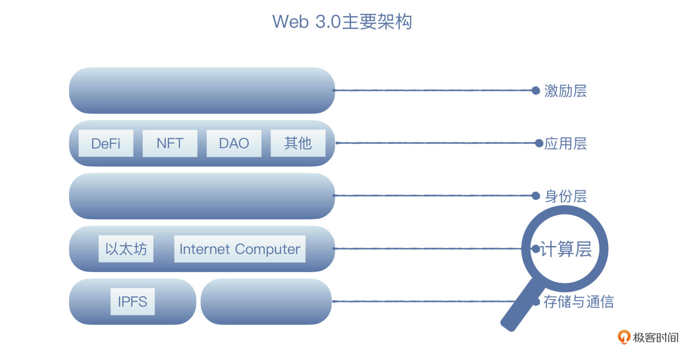
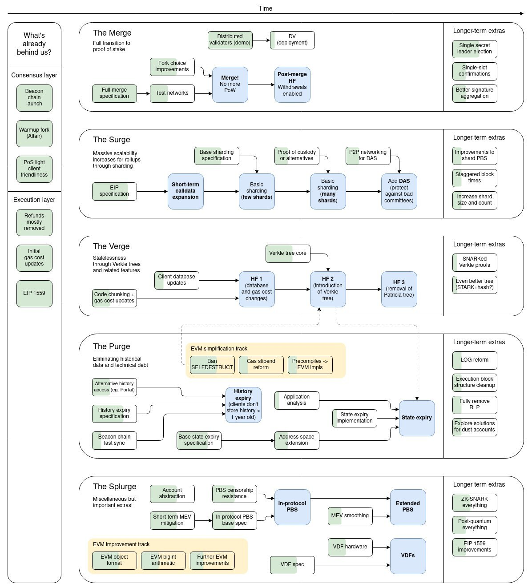

- 00 开篇词 Web 3.0：一场已经开启的互联网革命！.md.html
- 01 我们为什么需要Web 3.0？.md.html
- 02 公链：从计算分层开始.md.html
- 03 继续分层：身份和激励.md.html
- 04 NFT（一）：数据确权及其文化和商业价值的发现.md.html
- 05 NFT（二）：数据确权及其文化和商业价值的发现.md.html
- 06 边玩边赚能给游戏和电商带来新的商业模式吗？.md.html
- 07 Web 3.0社交和创作者经济.md.html
- 08 区块链：从底层重构金融.md.html
- 09 DeFi：“三无模式”开辟金融新蓝海.md.html
- 10 关于DAO的七个真相和两个趋势（一）.md.html
- 11 关于DAO的七个真相和两个趋势（二）.md.html
- 12 DeFi的空中楼阁能盖多高？.md.html
- 13 代码和法律，哪个更强？.md.html
- 14 Web 3.0正在形成的合力.md.html
- 特别放送 Yuga Labs：Web 3.0迪士尼的谛造之路.md.html
- 结束语 Web 3.0时代，你的创造和收获！.md.html
- 捐赠
02 公链：从计算分层开始
你好，我是郭大治。
从这节课开始，我们会走进Web 3.0世界的内部，详细看看Web 3.0的主要结构。在上节课我们也说了，Web 3.0主要是通过纵向分层打破横向垄断的方式，来推动互联网升级。那么今天，我们就从Web 3.0结构中最基础的一层，也就是提供通用计算服务的计算层开始，认识Web 3.0。

为什么是通用计算服务？
在正式开始之前，我们先来搞清楚一个小问题：为什么叫通用计算服务呢？
这是因为 Web 3.0的计算层是开放的，谁都可以用。它并不是像我们现在登录的绝大部分网站一样，都运行在自己专属的服务器上，在Web 3.0里，是把计算层独立了出来，就像我们现在用到的5G网络、自来水系统、电网一样。
那么，Web 3.0为什么一定要强调让计算层独立出来呢？其实它主要是想通过这种分层的方式避免数据垄断，让数据以公共账本的形式对所有人公开。当然，数据的公开也不是终点，让数据回归创造数据的人才是终点，但这一切首先要从摆脱数据垄断开始。
以太坊就是这样一种提供通用计算服务的基础设施，由于以太坊的计算网络可以随时进出，既不会受到任何限制，也不会影响计算功能的输出，所以我们一般都把以太坊这样的网络称为“公链”。今天，我们就从以太坊出发，看看这个公链到底是如何提供计算服务的。
从比特币开始
不过，要介绍以太坊，我们还是要先从比特币说起。因为比特币第一次基于去中心化的网络实现了一种确定性的计算服务，虽然人们把这种计算的结果称为“数字黄金”，但从技术的角度来讲，比特币实际上是一套“状态转换系统”，这个系统是以比特币的交易信息作为输入，并将这些输入，转换为新的比特币的账本进行输出。
这个流程看起来和银行的流程非常相似，比特币在不同时间的账本状态，对应着银行不同时点的资产负债表，“状态转换函数”则对应银行的账务处理系统。
对于银行来说，它只需一套软件系统，就可以完成账务处理。但是对于比特币来说，就需要将“状态转换”和“共识机制”结合起来，才能使比特币具备“去信任的数字黄金”的全部属性。
不过，比特币“数字黄金”的模式注定无法走得更远，因为比特币的架构太紧密了，缺乏必要的可扩展性。
你可能知道，比特币的可扩展性主要体现为脚本，但脚本只能实现一些简单的合约功能。比如说，它就不支持复杂的循环运算，以至于无法实现图灵完备；再比如说，在比特币系统里，代表未花费余额的 UTXO，只能进行类似0或者1的逻辑功能，这样就导致比特币只能构造简单的一次性合约，而不能实现诸如多阶段期权合约，以及去中心化交易报价等功能。
那么以太坊，就是在比特币的基础之上建立了一个替代框架，基于这个框架，就可以让客户端的计算性能更强大，也可以让开发更简单，同时还能允许应用程序共享区块链的安全性。
以太坊为什么是“世界通用账本”？
以太坊内置了图灵完备的编程语言，这样任何人都可以基于以太坊编写智能合约、进行去中心化应用开发，也可以自由地针对所有权规则、交易形式和状态转换函数进行设定。
不过，如果按照比特币“状态转换系统”的视角去分析以太坊，你会发现，以太坊的状态不再通过“所有权”反映，而是表示为“账户”，“账户”不仅包含了资产余额，还可以和合约进行交互，有了“账户”之后，智能合约的执行就更加轻便和快捷，从而可以给它的可扩展性创造条件。
所以，基于以上设计，以太坊就可以实现更多更加精细化的控制。
举个例子。在转账的功能方面，比特币可以设置成集齐五个账户中的三个，才可以发起转账支付，而以太坊则可以设置为集齐五个账户中的三个账户的签名，最多可以提取合约中的80%的金额，如果只是集齐五个账户中两个账户的签名，则每天最多可以提取合约中的10%的金额。
另外，以太坊同时可以为很多的去中心化应用提供计算支持，特别是快速开发、安全性要求高、协议间交互性频繁的应用，比如金融应用，它可以为用户提供代币发行、储蓄与借贷以及金融衍生品等服务。典型的例子就是DeFi。
可以说，以太坊就是为去中心化应用提供通用计算功能的基础层，由于它更强调账户状态的严格的同步，以太坊也因此被称为“世界通用账本”。
IPFS：按照内容重新构建文件检索系统
OK，我们再接着来看这张结构图。如果说，以太坊为Web 3.0提供了通用的计算层，那么以IPFS为代表的去中心化存储类项目，则提供了通用的存储层。
IPFS全称星际文件传输系统，它是一个按照内容进行检索的文件存储和调用系统。
基于IPFS协议，可以把我们需要存储的文件，以256KB为单位打散，然后分别进行存储。但同时，IPFS还会为每份文件生成一个哈希值，这个哈希值和文件进行捆绑之后，会形成一个完整的索引结构，被节点上传到整个网络之中供用户检索使用。
从这个基本流程上可以看出，基于IPFS协议，存储内容和存储节点之间，并没有直接的对应关系，针对已经碎片化的文件，也可以通过加密手段使文件内容加密，而矿工只有在用户发出检索请求之后，才会在IPFS的索引结构中找到对应的文件。
我们知道，数据的基本特性是“存储即拥有”，我们把自己的行为数据保存在了互联网公司的服务器上，其实同时也就把数据的使用权，默认“赋予”给了互联网公司。那互联网公司为了获得“被赋予”数据使用权的资格，也会宁愿提供免费服务吸引用户。
而IPFS的这种设计，显然就把这种模式打破了。
基于IPFS协议，我们用户按照文件的内容进行检索，使得数据和文件的存储，脱离了提供服务的特定的网站，同时也使得数据的调用不再依赖于这个网站的持续运行，我们不再会因为网站故障或被攻击、IP地址被删等原因而无法下载数据，也不需要再为数据在存储期间被篡改而担忧。
同时，IFPS还可以将分布在不同地域的存储空间进行整合利用，从而就为个人的、分散的存储空间找到了一个经济变现的机会。
这里我们来看两个案例。
一个是在2021年下半年，头像类NFT产品获得了市场的追捧，比如 CryptoPunk、Bored Ape Yacht Club 的“地板价”，已经达到了数百个ETH。
那我们可以想想看，如果这些图片还被存储在中心化网站的服务器上，理论上来说，图片就随时可以被篡改或永久消失；而如果把图片直接上传到以太坊上，可能Gas费会非常昂贵。因此，大量NFT项目就选择通过IPFS来存储这些图片。
另一个是在2022年4月1日，以太坊宣布其官方网站ethereum.org，已经部署到了IPFS上，用户可通过ENS浏览etheretherum.eth网站。这样的消息动态，其实也正说明了Web 3.0不同协议之间的可组合性。
Internet Computer：专为Web 3.0应用而生的公链
好了，接着我们再来看另一条公链，Internet Computer。
如果说去中心化存储聚焦于数据存储，相对于“通用的计算服务”来说，属于一种“旁支”的话，那Internet Computer就是在以太坊开辟的主战场上继续突进。
现在我们知道，以太坊是在比特币的基础上，实现了图灵完备的智能合约，它理论上可以支持任何形式的去中心化应用，但理论归理论，实践归实践。事实上，以太坊只能支持有限数量的去中心化应用。
为什么会出现这种情况呢？主要的原因就是著名的CAP不可能三角定理。也就是说，一个分布式系统中，在一致性、可用性和分区容错性三项特征中，最多只能存在其中两个。
简单来看，一致性（Consistence）也就是CAP中的C，它是指所有节点数据是否保持一致。我们根据数据一致性的不同程度，可以分为强一致性、弱一致性和最终一致性，这里的强一致性，是指所有节点写操作完成之后，数据都是完全一致的；而弱一致性则可以容忍写操作之后，出现部分或全部不一致数据；最终一致性则只要求，经过一段时间之后的数据一致即可。
然后是可用性（Avalibility），就是CAP中的A，是指系统每次向未崩溃的节点发送请求，都能得到回应。也就是说节点处于可响应状态，对于需要处理的计算任务可以及时完成。
至于分区容错性（Partition Tolerance），就是CAP中的P，它是指节点之间传递信息，可以出现误差或延误，但不会影响系统整体运行。
那么，对于区块链来说，分区容错是前提。所以，不同的区块链，只能在一致性和可用性上做出取舍。比如比特币和以太坊，就是以放弃一定的可用性为代价而追求强一致性的代表。
比如说比特币。
从数据结构上来看，它的每个节点、每一次交易验证，都需要遍历操作。也就是说，在发起转账之前，我们先要验证这个人是否有足够的比特币用来转账。
那么如何判断这个人是否拥有足够的比特币呢？比特币的设定是要看转账给他的人是否拥有足够的比特币，按照这种方式，我们每一次转账，都要回溯到这个比特币是在哪个区块、由哪个矿工挖出来的，然后又通过多少次转账才到了自己的名下。整个验证一遍，我们才能最终确认这笔转账是否有效。所以，这样的查询方式效率就会非常低。
从数据存储上来看，比特币的每个节点都需要下载完整数据包，那么当交易越来越多的时候，节点存储空间，就成为了区块链处理效率的又一个瓶颈。
从计算方式上来看，比特币的全部交易都只能通过串行计算而没有并行计算，所有节点都需要针对所有任务进行重复计算，所以计算效率也会受到很明显的影响。
然后我们再来看以太坊。
首先，虽然它设置了“账户”，从数据查询的角度来看不再需要“遍历”操作，但以太坊每块存储空间仅为1MB，区块大小的限制依然很明显。而且，以太坊同样也只支持串行计算，不支持并行计算。
所以，以太坊仍然属于强一致性、低可用性的公链。强一致性对于金融相关的应用非常重要，但是对于其他类的应用来说，就显得能力不足了。
目前基于以太坊的应用，往往会采用一种“混合结构”，即和资产相关的操作在链上执行，而和资产无关的业务放在链下执行。这样做的好处是成本上的经济，但缺陷就是，去中心化应用仍然在某种程度上，依赖于中心化节点，由此而来的“单点故障”“数据泄露”等问题，仍然没有得到完美解决。
而现在我们要说的 Internet Computer（IC），是以打造“互联网计算机”为目标，为去中心化应用提供全栈式开发及运维系统，它把去中心化应用延伸到了更广泛的场景。
IC是由一组加密协议组成的，这些协议会把独立操作的节点连接到一组区块链网络中。同时，它还克服了传统区块链上，智能合约在速度、存储成本和计算方面的限制，使得智能合约可以以近似于中心化网络的速度运行。
另外还有一点，不同于以太坊生态往往偏向于金融属性，基于IC建立的是一种“全栈式”的去中心化应用，从前端到计算再到后台，都可以基于IC通过不同的容器实现，从而实现一种“无单点故障”运行状态。
而且，基于IC，我们不仅可以实现已经出现在以太坊上的各种应用，甚至可以构建一个完整的比特币和以太坊的节点，使得在IC、比特币和以太坊之间，能够实现一种原子层面的互操作性。
不过，虽然IC的技术架构更加适应去中心化应用，但由于IC还处于生态发展的早期，各种基础设施有待完善，比如说转账的原子性，还没有形成统一的技术标准。
所以这样来看，它对于金融相关的应用来说，其实也缺乏足够的安全性。
以太坊依然处在赛场的最前沿
不过，如果说其他公链的创新都是以超越以太坊为目标的话，以太坊的自我突破也没有停止过。
早在2018年，以太坊就提出了明确的“升级路线图”，也就是它会把Pow共识机制转换为Pos共识机制，并通过分片技术进行全面扩容。这个分片技术的主要思路，就是支持以太坊实现并行计算，以提升计算效率。

此外，在以太坊2.0路线图之外，还出现了 Layer-2 方案。
Layer-2的思路是将部分计算工作从链上移至链下，并通过某种机制实现链下和链上安全性的共享。目前已经出现了ZK Rollup（ZKR）和Optimistic Rollup（OP）等技术路线，不过也都还没有进入大规模应用的状态。你在使用的时候也要注意风险，但是从另外一个角度来看，这也可能是一种投资的机会。
小结
技术的进化没有终点，但公链技术的进化，一定是围绕通用计算服务的核心目标展开的。在这节课里，我们知道了在Web 3.0中，为了避免数据垄断，需要一种通用设施提供计算服务，这种通用设施就是公链。
我们采用了一个通用的框架，描述了公链赛道需要解决的主要问题，以及比特币、以太坊、IC等各条公链采用了什么方式、为这个问题提供了什么样的解决方案。但我们同样也要清楚一点，就是它们各自都有仍待解决的问题。
除此之外，我也给你介绍了这个赛道最新的进展，也就是Layer-2和分片。希望你能通过今天的课程比较深入地了解公链这个赛道，也能对公链赛道的持续改进提出自己的想法，至少不要停留在“公链越快越好”的认知状态。
思考题
公链的计算实际上是一种冗余计算，如何让这种冗余计算更环保和绿色呢？欢迎在留言区分享你的思考和答案，也欢迎你把今天的内容分享给更多的朋友。
© 2019 - 2023 Liangliang Lee. Powered by gin and hexo-theme-book.